2021
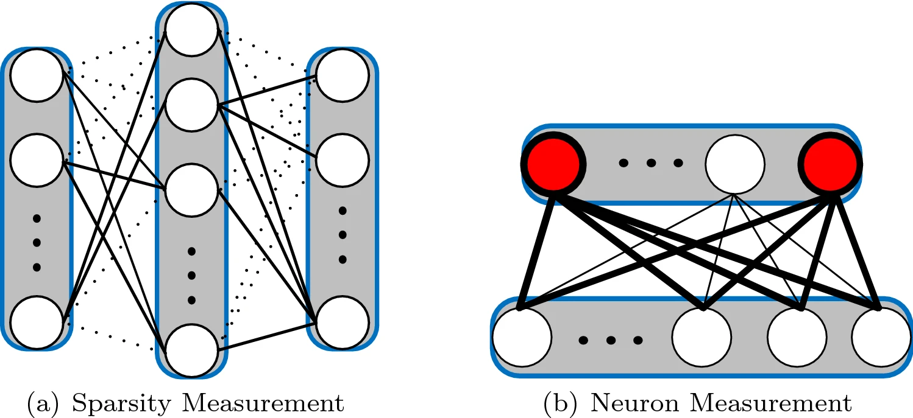
Xu Yuan, Xiangjun Shen*, Sumet Mehta, Teng Li, Shiming Ge, Zhengjun Zha.
Structure Injected Weight Normalization for Training Deep Networks.
Multimedia Systems, 2021: 1-12.
[PDF]
[DOI]
[Bib]
@article{yuan2021structure,
title={Structure injected weight normalization for training deep networks},
author={Yuan, Xu and Shen, Xiangjun and Mehta, Sumet and Li, Teng and Ge, Shiming and Zha, Zhengjun},
journal={Multimedia Systems},
pages={1--12},
year={2021},
publisher={Springer}
}
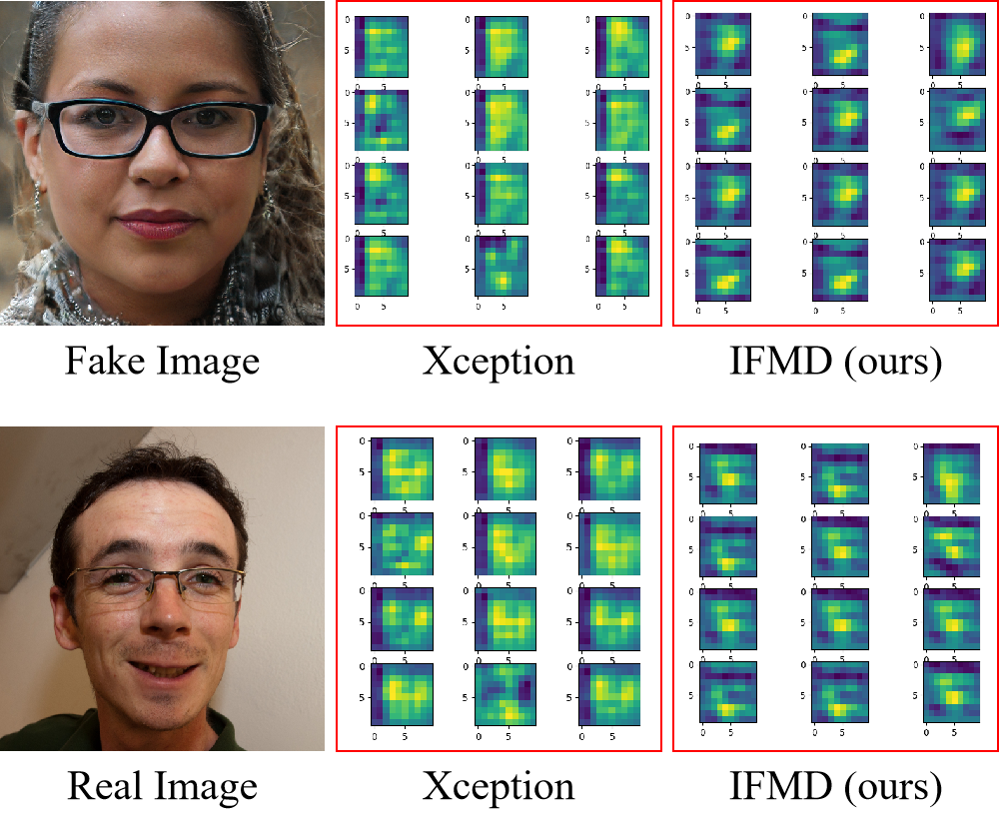
Yingying Hua, Daichi Zhang, Pengju Wang, Shiming Ge*.
Interpretable Face Manipulation Detection via Feature Whitening.
In International Conference on Machine Learning (ICML Workshop), 2021.
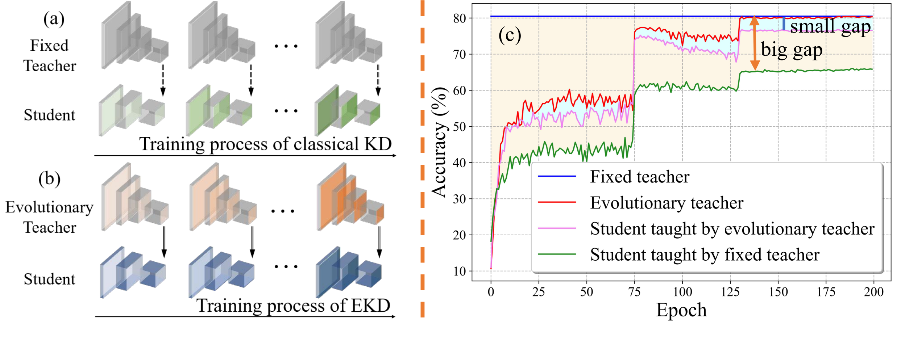
Kangkai Zhang, Chunhui Zhang, Shikun Li, Dan Zeng, and Shiming Ge*.
Student Network Learning via Evolutionary Knowledge Distillation.
IEEE Transactions on Circuits and Systems for Video Technology (TCSVT), early access,
2021: 1-13.
[PDF]
[Project]
[DOI]
[Bib]
@article{zhang2021ekd,
author={Kangkai Zhang, Chunhui Zhang, Shikun Li, Dan Zeng, and Shiming Ge},
title={Student Network Learning via Evolutionary Knowledge Distillation},
journal={IEEE Transactions on Circuits and Systems for Video Technology},
year={2021},
volume={},
number={},
pages={1-13}
}
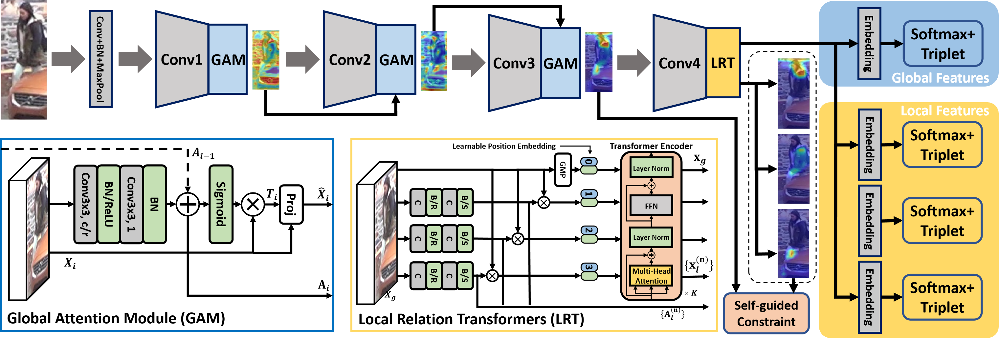
Guanshuo Wang, Xiong Chen, Jialin Gao, Xi Zhou, Shiming Ge*.
Self-guided Body Part Alignment with Relation Transformers for Occluded Person
Re-Identification.
IEEE Signal Processing Letters, 2021, 28: 1155-1159.
[PDF]
[DOI]
[Bib]
@ARTICLE{9448489,
author={Wang, Guanshuo and Chen, Xiong and Gao, Jialin and Zhou, Xi and Ge, Shiming},
journal={IEEE Signal Processing Letters},
title={Self-Guided Body Part Alignment With Relation Transformers for Occluded Person Re-Identification},
year={2021},
volume={28},
number={},
pages={1155-1159},
doi={10.1109/LSP.2021.3087079}
}
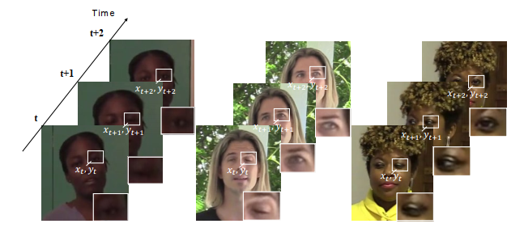
Daichi Zhang, Chenyu Li, Fanzhao Lin, Dan Zeng, Shiming Ge*.
Detecting Deepfake Videos with Temporal Dropout 3DCNN.
In International Joint Conference on Artificial Intelligence (IJCAI), 2021: 565-573.
[PDF]
[Project]
[DOI]
[Bib]
@inproceedings{Daichi2021IJCAI,
author = {Daichi Zhang, and Chenyu Li, and Fanzhao Lin, and Dan Zeng, and Shiming Ge},
title = {Detecting Deepfake Videos with Temporal Dropout 3DCNN},
booktitle = {Proceedings of the 30th International Joint Conference on Artificial Intelligence},
pages={565-573},
year = {2020},
}

Yingying Hua, Shiming Ge*, Daichi Zhang.
Interpret the Predictions of Deep Networks via Re-Label Distillation.
In IEEE International Conference on Multimedia and Expo (ICME), 2021: 1-6.
[PDF]
[Project]
[DOI]
[Bib]
@INPROCEEDINGS{9428072,
author={Hua, Yingying and Ge, Shiming and Zhang, Daichi},
booktitle={2021 IEEE International Conference on Multimedia and Expo (ICME)},
title={Interpret The Predictions Of Deep Networks Via Re-Label Distillation},
year={2021},
volume={},
number={},
pages={1-6},
doi={10.1109/ICME51207.2021.9428072}
}
Shiming Ge*, Chunhui Zhang, Shikun Li, Dan Zeng*, and Dacheng Tao.
Cascaded Correlation Refinement for Robust Deep Tracking.
IEEE Transactions on Neural Networks and Learning Systems (TNNLS), 2021,
32(3): 1276-1288.
[PDF]
[Project]
[DOI]
[Bib]
@ARTICLE{9069312,
author={S. {Ge} and C. {Zhang} and S. {Li} and D. {Zeng} and D. {Tao}},
journal={IEEE Transactions on Neural Networks and Learning Systems},
title={Cascaded Correlation Refinement for Robust Deep Tracking},
year={2021},
volume={32},
number={3},
pages={1276-1288},
doi={10.1109/TNNLS.2020.2984256}
}
2020
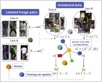
Jieru Jia, Qiuqi Ruan, Yi Jin*, Gaoyun An, and Shiming Ge.
View-Specifific Subspace Learning and Re-Ranking for Semi-Supervised Person
Re-Identifification.
Pattern Recognition (PR), 2020, 108: 107568.
[PDF]
[DOI]
[Bib]
@article{JIA2020107568,
title = "View-specific subspace learning and re-ranking for semi-supervised person re-identification",
journal = "Pattern Recognition",
volume = "108",
pages = "107568",
year = "2020",
issn = "0031-3203",
doi = "https://doi.org/10.1016/j.patcog.2020.107568",
url = "http://www.sciencedirect.com/science/article/pii/S003132032030371X",
author = "Jieru Jia and Qiuqi Ruan and Yi Jin and Gaoyun An and Shiming Ge",
keywords = "Person re-identification, Metric learning, Semi-supervised learning, Re-ranking",
}
化盈盈,张岱墀,葛仕明*.
深度学习模型可解释性的研究进展.
信息安全学报, 2020, 5(3): 1-12.
[PDF]
[DOI]
[Bib]
@article{化盈盈2020深度学习模型可解释性的研究进展,
title={深度学习模型可解释性的研究进展},
author={化盈盈 and 张岱墀 and 葛仕明},
journal={信息安全学报},
volume={5},
number={3},
pages={1--12},
year={2020}
}
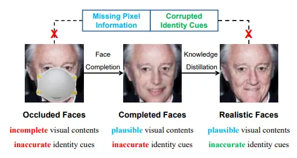
Chenyu Li, Shiming Ge*, Daichi Zhang, and Jia Li.
Look Through Masks: Towards Masked Face Recognition with De-Occlusion Distillation.
In ACM International Conference on Multimedia (MM), 2020: 3016–3024.
[PDF]
[Project]
[Bib]
@inproceedings{Li20,
author = {Li, Chenyu and Ge, Shiming and Zhang, Daichi and Li, Jia},
title = {Look Through Masks: Towards Masked Face Recognition with De-Occlusion Distillation},
year = {2020},
booktitle = {Proceedings of the 28th ACM International Conference on Multimedia},
pages = {3016–3024}
}
Chunhui Zhang, Shiming Ge*, Kangkai Zhang, and Dan Zeng.
Accurate UAV Tracking with Distance-Injected Overlap Maximization.
In ACM International Conference on Multimedia (MM), 2020: 565–573.
[PDF]
[Project]
[DOI]
[Bib]
@inproceedings{Zhang20,
author = {Zhang, Chunhui and Ge, Shiming and Zhang, Kangkai and Zeng, Dan},
title = {Accurate UAV Tracking with Distance-Injected Overlap Maximization},
year = {2020},
doi = {10.1145/3394171.3413959},
booktitle = {Proceedings of the 28th ACM International Conference on Multimedia},
pages = {565–573},
series = {MM '20}
}
Dan Zeng, Han Liu, Hui Lin, Shiming Ge*.
Talking Face Generation with Expression-Tailored Generative Adversarial Network.
In ACM International Conference on Multimedia (MM), 2020: 1716–1724.
[PDF]
[DOI]
[Bib]
@inproceedings{Zeng20,
author = {Zeng, Dan and Liu, Han and Lin, Hui and Ge, Shiming},
title = {Talking Face Generation with Expression-Tailored Generative Adversarial Network},
year = {2020},
doi = {10.1145/3394171.3413844},
booktitle = {Proceedings of the 28th ACM International Conference on Multimedia},
pages = {1716–1724},
series = {MM '20}
}
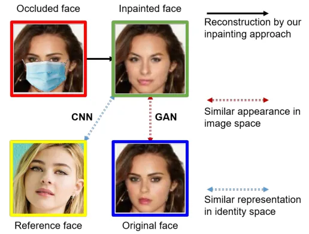
Shiming Ge*, Chenyu Li, Shengwei Zhao, and Dan Zeng*.
Occluded Face Recognition in the Wild by Identity-Diversity Inpainting.
IEEE Transactions on Circuits and Systems for Video Technology (TCSVT), 2020,
30(10): 3387-3397.
[PDF]
[Project]
[DOI]
[Bib]
@article{ge2020IDGAN,
author = {Ge, Shiming and Li, Chenyu and Zhao, Shengwei and Zeng, Dan},
year = {2020},
title = {Occluded Face Recognition in the Wild by Identity-Diversity Inpainting},
journal = {IEEE Transactions on Circuits and Systems for Video Technology (TCSVT)},
volume={30},
number={10},
pages={3387-3397}
}
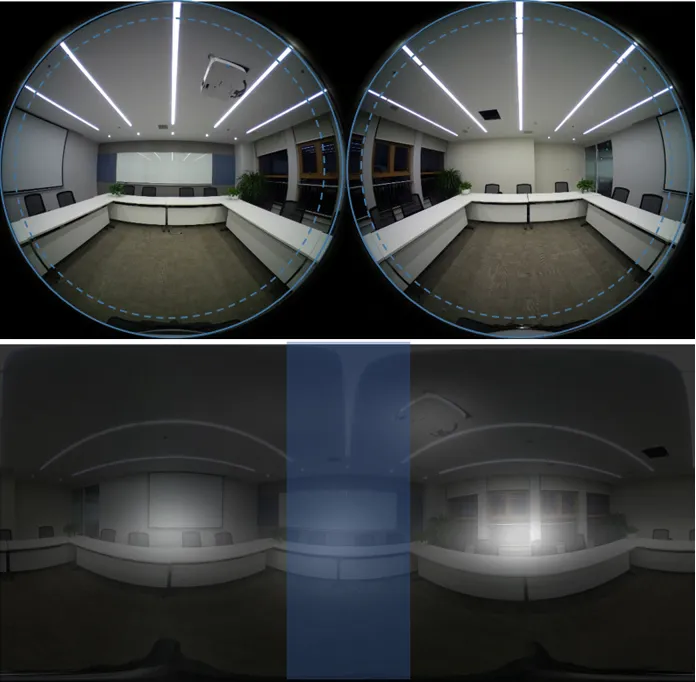
Jia Li, Yifan Zhao, Weihua Ye, Kaiwen Yu, Shiming Ge*.
Attentive Deep Stitching and Quality Assessment for 360° Omnidirectional Images.
IEEE Journal of Selected Topics in Signal Processing, 2020, 14(1): 209-221.
[PDF]
[DOI]
[Bib]
@article{li2020attentive,
title="Attentive Deep Stitching and Quality Assessment for 360 $^{\circ }$ Omnidirectional Images",
author="Jia {Li} and Yifan {Zhao} and Weihua {Ye} and Kaiwen {Yu} and Shiming {Ge}",
journal="IEEE Journal of Selected Topics in Signal Processing",
volume="14",
number="1",
pages="209--221",
notes="Sourced from Microsoft Academic - https://academic.microsoft.com/paper/2990246360",
year="2020"
}
Jia Li, Kui Fu, Shengwei Zhao, Shiming Ge*.
Spatiotemporal Knowledge Distillation for Efficient Estimation of Aerial Video Saliency.
IEEE Transactions on Image Processing (TIP), 2020, 29: 1902-1914.
[PDF]
[DOI]
[Bib]
@article{li2020spatiotemporal,
title="Spatiotemporal Knowledge Distillation for Efficient Estimation of Aerial Video Saliency",
author="Jia {Li} and Kui {Fu} and Shengwei {Zhao} and Shiming {Ge}",
journal="IEEE Transactions on Image Processing,
volume="29",
pages="1902--1914",
notes="Sourced from Microsoft Academic - https://academic.microsoft.com/paper/2939308562",
year="2020"
}
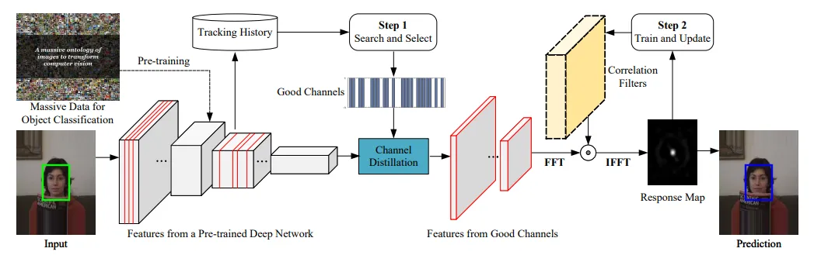
Shiming Ge*, Zhao Luo, Chunhui Zhang, Yingying Hua, Dacheng Tao.
Distilling Channels for Efficient Deep Tracking.
IEEE Transactions on Image Processing (TIP), 2020, 29: 2610-2621.
[PDF]
[Project]
[DOI]
[Bib]
@article{ge2020distilling,
title="Distilling Channels for Efficient Deep Tracking",
author="Shiming {Ge} and Zhao {Luo} and Chunhui {Zhang} and Yingying {Hua} and Dacheng {Tao}",
journal="IEEE Transactions on Image Processing,
volume="29",
pages="2610--2621",
notes="Sourced from Microsoft Academic - https://academic.microsoft.com/paper/2987906097",
year="2020"
}
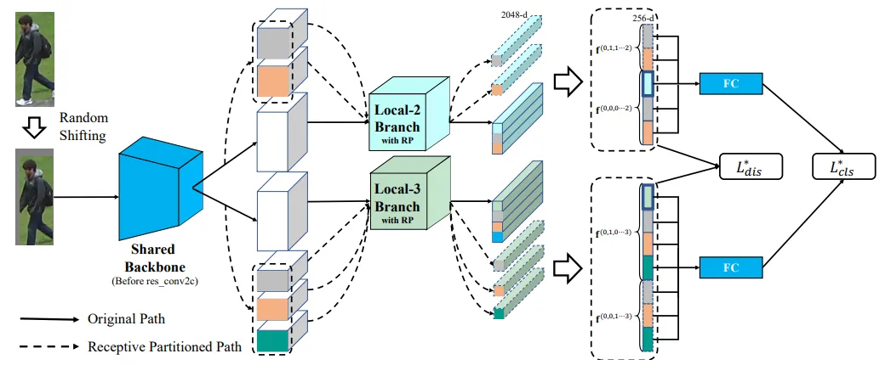
Guanshuo Wang, Yufeng Yuan, Jiwei Li, Shiming Ge*, Xi Zhou.
Receptive Multi-Granularity Representation for Person Re-Identification.
IEEE Transactions on Image Processing (TIP), 2020, 29: 6096-6109.
[PDF]
[Project]
[DOI]
[Bib]
@article{wang2020receptive,
title="Receptive Multi-Granularity Representation for Person Re-Identification",
author="Guanshuo {Wang} and Yufeng {Yuan} and Jiwei {Li} and Shiming {Ge} and Xi {Zhou}",
journal="IEEE Transactions on Image Processing,
volume="29",
pages="6096--6109",
notes="Sourced from Microsoft Academic - https://academic.microsoft.com/paper/3019968127",
year="2020"
}
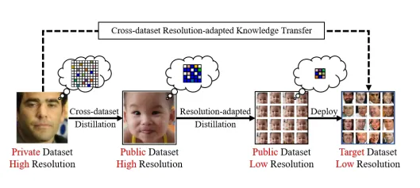
Shiming Ge, Shengwei Zhao, Chenyu Li, Yu Zhang, Jia Li*.
Efficient Low-Resolution Face Recognition via Bridge Distillation.
IEEE Transactions on Image Processing (TIP), 2020, 29: 6898-6908.
[PDF]
[Project]
[DOI]
[Bib]
@article{ge2020bd,
author={Shiming Ge and Shengwei Zhao and Chenyu Li and Yu Zhang and Jia Li},
title={Efficient Low-Resolution Face Recognition via Bridge Distillation},
journal={IEEE Transactions on Image Processing},
year={2020},
volume={29},
number={},
pages={6898-6908}
}
Shikun Li, Shiming Ge*, Yingying Hua, Chunhui Zhang, Hao Wen, Tengfei Liu, Weiqiang
Wang.
Coupled-View Deep Classifier Learning from Multiple Noisy Annotators.
In AAAI Conference on Artificial Intelligence (AAAI), 2020: 4667-4674.
[PDF]
[Project]
[DOI]
[Bib]
@inproceedings{li2020coupled,
title="Coupled-view Deep Classifier Learning from Multiple Noisy Annotators",
author="Shikun {Li} and Shiming {Ge} and Yingying {Hua} and Chunhui {Zhang} and Hao {Wen} and Tengfei {Liu} and Weiqiang {Wang}",
booktitle="AAAI 2020 : The Thirty-Fourth AAAI Conference on Artificial Intelligence",
pages="4667--4674",
notes="Sourced from Microsoft Academic - https://academic.microsoft.com/paper/2997312573",
year="2020"
}
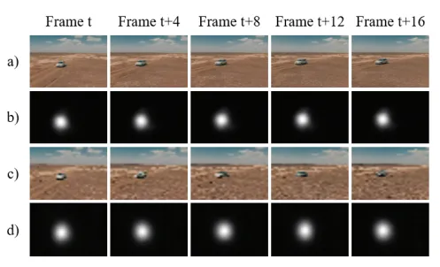
Kui Fu, Peipei Shi, Yafei Song, Shiming Ge, Xiangju Lu*, Jia Li*.
Ultrafast Video Attention Prediction with Coupled Knowledge Distillation.
In AAAI Conference on Artificial Intelligence (AAAI), 2020: 10802-10809.
[PDF]
[DOI]
[Bib]
@inproceedings{fu2020ultrafast,
title="Ultrafast Video Attention Prediction with Coupled Knowledge Distillation",
author="Kui {Fu} and peipei {shi} and Yafei {Song} and Shiming {Ge} and Xiangju {Lu} and Jia {Li}",
booktitle="AAAI 2020 : The Thirty-Fourth AAAI Conference on Artificial Intelligence",
pages="10802--10809",
notes="Sourced from Microsoft Academic - https://academic.microsoft.com/paper/2997128429",
year="2020"
}
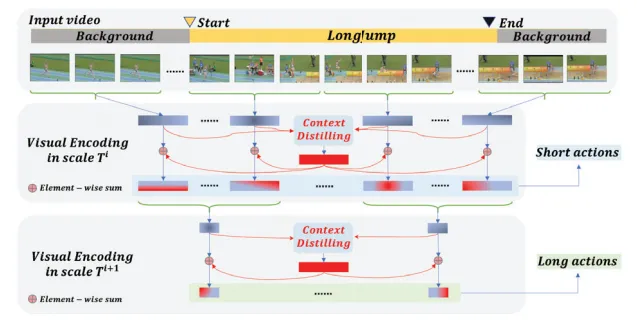
Jialin Gao, Zhixiang Shi, Guanshuo Wang, Jiani Li, Yufeng Yuan, Shiming Ge*, Xi Zhou.
Accurate Temporal Action Proposal Generation with Relation-Aware Pyramid Network.
In AAAI Conference on Artificial Intelligence (AAAI), 2020: 10810-10817.
[PDF]
[DOI]
[Bib]
@inproceedings{gao2020accurate,
title="Accurate Temporal Action Proposal Generation with Relation-Aware Pyramid Network",
author="Jialin {Gao} and zhixiang {shi} and Guanshuo {Wang} and jiani {li} and Yufeng {Yuan} and Shiming {Ge} and Xi {Zhou}",
booktitle="AAAI 2020 : The Thirty-Fourth AAAI Conference on Artificial Intelligence",
pages="10810--10817",
notes="Sourced from Microsoft Academic - https://academic.microsoft.com/paper/2998582438",
year="2020"
}

Shiming Ge, Kangkai Zhang, Haolin Liu, Yingying Hua, Shengwei Zhao, Xin Jin*, Hao Wen.
Look One and More: Distilling Hybrid Order Relational Knowledge for Cross-Resolution
Image Recognition.
In AAAI Conference on Artificial Intelligence (AAAI), 2020: 10845-10852.
[PDF]
[Project]
[DOI]
[Bib]
@inproceedings{ge2020look,
title="Look One and More: Distilling Hybrid Order Relational Knowledge for Cross-Resolution Image Recognition",
author="Shiming {Ge} and Kangkai {Zhang} and Haolin {Liu} and Yingying {Hua} and Shengwei {Zhao} and Xin {Jin} and Hao {Wen}",
booktitle="AAAI 2020 : The Thirty-Fourth AAAI Conference on Artificial Intelligence",
pages="10845--10852",
notes="Sourced from Microsoft Academic - https://academic.microsoft.com/paper/2998081460",
year="2020"
}
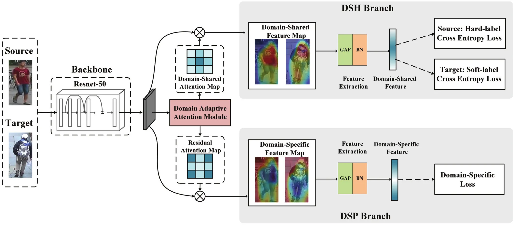
Yangru Huang , Peixi Peng , Yi Jin*, Yidong Li, Junliang Xing, and Shiming Ge.
Domain Adaptive Attention Learning for Unsupervised Person Re-Identifification.
In In AAAI Conference on Artificial Intelligence (AAAI), 2020: 11069-11076.
[PDF]
[DOI]
[Bib]
@inproceedings{huang2020domain,
title={Domain Adaptive Attention Learning for Unsupervised Person Re-Identification.},
author={Huang, Yangru and Peng, Peixi and Jin, Yi and Li, Yidong and Xing, Junliang and Ge, Shiming},
booktitle={AAAI},
pages={11069--11076},
year={2020}
}
2019

Qiang Li, Xianzhen He, Wenguang Wang, Shiming Ge.
AeMFace: Additive E-Margin Loss for Deep Face Recognition.
In IEEE International Conference on Signal, Information and Data Processing (ICSIDP),
2019: 1-6.
[DOI]
[Bib]
@INPROCEEDINGS{9173230,
author={Q. {Li} and X. {He} and W. {Wang} and S. {Ge}},
booktitle={2019 IEEE International Conference on Signal, Information and Data Processing (ICSIDP)},
title={AeMFace: Additive E-Margin Loss for Deep Face Recognition},
year={2019},
volume={},
number={},
pages={1-6},
}

Weihua Ou, Jianping Gou, Quan Zhou, Shiming Ge, Fei Long.
Discriminative Multiview Nonnegative Matrix Factorization for Classification.
In IEEE Access, 2019, 7: 60947-60956.
[PDF]
[DOI]
[Bib]
@article{8710325,
author={W. {Ou} and J. {Gou} and Q. {Zhou} and S. {Ge} and F. {Long}},
journal={IEEE Access},
title={Discriminative Multiview Nonnegative Matrix Factorization for Classification},
year={2019},
volume={7},
number={},
pages={60947-60956}
}
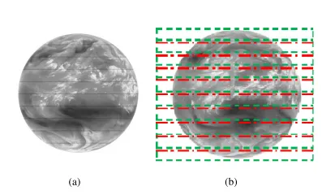
Boyang Chen, Xuan Feng, Ronghua Wu, Qiang Guo, Xi Wang, Shiming Ge.
Adaptive Wavelet Filter With Edge Compensation for Remote Sensing Image Denoising.
In IEEE Access, 2019, 7(99): 91966-91979.
[PDF]
[DOI]
[Bib]
@article{2019Adaptive,
title={Adaptive Wavelet Filter with Edge Compensation for Remote Sensing Image Denoising},
author={ Chen, Boyang and Feng, Xuan and Wu, Ronghua and Guo, Qiang and Ge, Shiming },
journal={IEEE Access},
volume={7},
number={99},
pages={91966-91979},
year={2019},
}
Xin Jin, Le Wu, Xiaodong Li, Xiaokun Zhang, Jingying Chi, Siwei Peng, Shiming Ge, Geng
Zhao, Shuying Li.
ILGNet: Inception Modules with Connected Local and Global Features for Efficient Image
Aesthetic Quality Classification using Domain Adaptation.
IET Computer Vision, 2019, 13(2): 206-212.
[DOI]
[Bib]
@article{jin2019ilgnet,
title="ILGNet: Inception Modules with Connected Local and Global Features for Efficient Image Aesthetic Quality Classification using Domain Adaptation",
author="Xin {Jin} and Le {Wu} and Xiaodong {Li} and Xiaokun {Zhang} and Jingying {Chi} and Siwei {Peng} and Shiming {Ge} and Geng {Zhao} and Shuying {Li}",
journal="Iet Computer Vision",
volume="13",
number="2",
pages="206--212",
notes="Sourced from Microsoft Academic - https://academic.microsoft.com/paper/2798868169",
year="2019"
}
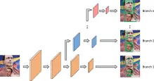
Dan Zeng, Han Liu, Fan Zhao, Shiming Ge*, Wei Shen, Zhijiang Zhang.
Proposal Pyramid Networks for Fast Face Detection.
Information Sciences, 2019, 495: 136-149.
[PDF]
[DOI]
[Bib]
@article{zeng2019proposal,
title="Proposal Pyramid Networks for Fast Face Detection",
author="Dan {Zeng} and Han {Liu} and Fan {Zhao} and Shiming {Ge} and Wei {Shen} and Zhijiang {Zhang}",
journal="Information Sciences",
volume="495",
pages="136--149",
notes="Sourced from Microsoft Academic - https://academic.microsoft.com/paper/2941768204",
year="2019"
}
Dan Zeng, Fan Zhao, Shiming Ge*, Wei Shen.
Fast Cascade Face Detection with Pyramid Network.
Pattern Recognition Letters (PRL), 2019, 119: 180-186.
[PDF]
[DOI]
[Bib]
@article{zeng2019fast,
title="Fast Cascade Face Detection with Pyramid Network",
author="Dan {Zeng} and Fan {Zhao} and Shiming {Ge} and Wei {Shen}",
journal="Pattern Recognition Letters",
volume="119",
pages="180--186",
notes="Sourced from Microsoft Academic - https://academic.microsoft.com/paper/2805054562",
year="2019"
}
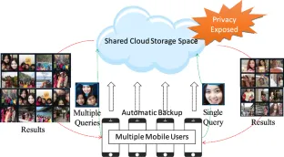
Xin Jin, Yujie Li, Shiming Ge*, Chenggen Song, Le Wu, Xinghui Zhou.
Secure Face Retrieval for Group Mobile Users.
Soft Computing, 2019, 23(23): 12813-12820.
[DOI]
[Bib]
@article{jin2019secure,
title="Secure Face Retrieval for Group Mobile Users",
author="Xin {Jin} and Yujie {Li} and Shiming {Ge} and Chenggen {Song} and Le {Wu} and Xinghui {Zhou}",
journal="soft computing",
volume="23",
number="23",
pages="12813--12820",
notes="Sourced from Microsoft Academic - https://academic.microsoft.com/paper/2916577793",
year="2019"
}
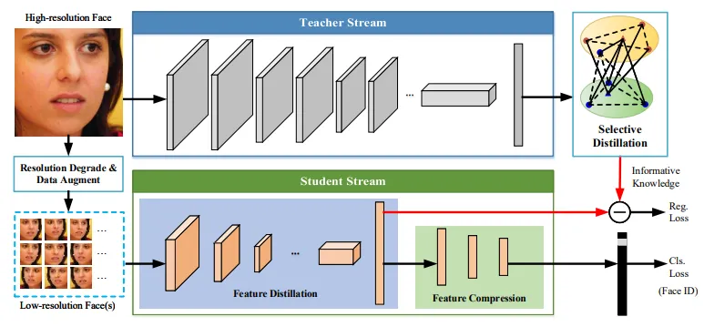
Shiming Ge, Shengwei Zhao, Chenyu Li, Jia Li*.
Low-Resolution Face Recognition in the Wild via Selective Knowledge Distillation.
IEEE Transactions on Image Processing (TIP), 2019, 28(4): 2051-2062.
[PDF]
[Project]
[DOI]
[Bib]
@article{ge2019low,
title="Low-Resolution Face Recognition in the Wild via Selective Knowledge Distillation",
author="Shiming {Ge} and Shengwei {Zhao} and Chenyu {Li} and Jia {Li}",
journal="IEEE Transactions on Image Processing,
volume="28",
number="4",
pages="2051--2062",
notes="Sourced from Microsoft Academic - https://academic.microsoft.com/paper/2901505625",
year="2019"
}
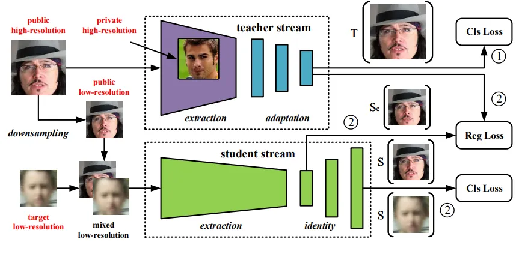
Shengwei Zhao, Xindi Gao, Shikun Li, Shiming Ge.
Low-Resolution Face Recognition in the Wild with Mixed-Domain Distillation.
In IEEE Fifth International Conference on Multimedia Big Data (BigMM), 2019: 148-154.
[Project]
[DOI]
[Bib]
@inproceedings{zhao2019low,
title="Low-Resolution Face Recognition in the Wild with Mixed-Domain Distillation",
author="Shengwei {Zhao} and Xindi {Gao} and Shikun {Li} and Shiming {Ge}",
booktitle="2019 IEEE Fifth International Conference on Multimedia Big Data (BigMM)",
pages="148--154",
notes="Sourced from Microsoft Academic - https://academic.microsoft.com/paper/2993952408",
year="2019"
}

Chunhui Zhang, Shiming Ge*, Yingying Hua, Dan Zeng*.
Robust Deep Tracking with Two-Step Augmentation Discriminative Correlation Filters.
In IEEE International Conference on Multimedia and Expo (ICME), 2019: 1774-1779.
[PDF]
[Project]
[DOI]
[Bib]
@inproceedings{zhang2019robust,
title="Robust Deep Tracking with Two-step Augmentation Discriminative Correlation Filters",
author="Chunhui {Zhang} and Shiming {Ge} and Yingying {Hua} and Dan {Zeng}",
booktitle="2019 IEEE International Conference on Multimedia and Expo (ICME)",
pages="1774--1779",
notes="Sourced from Microsoft Academic - https://academic.microsoft.com/paper/2965219740",
year="2019"
}
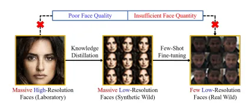
Shiming Ge, Shengwei Zhao, Xindi Gao, Jia Li*.
Fewer-Shots and Lower-Resolutions: Towards Ultrafast Face Recognition in the Wild.
In ACM International Conference on Multimedia (MM), 2019: 229-237.
[PDF]
[Project]
[DOI]
[Bib]
@inproceedings{ge2019fewer,
title="Fewer-Shots and Lower-Resolutions: Towards Ultrafast Face Recognition in the Wild",
author="Shiming {Ge} and Shengwei {Zhao} and Xindi {Gao} and Jia {Li}",
booktitle="Proceedings of the 27th ACM International Conference on Multimedia",
pages="229--237",
notes="Sourced from Microsoft Academic - https://academic.microsoft.com/paper/2981647706",
year="2019"
}
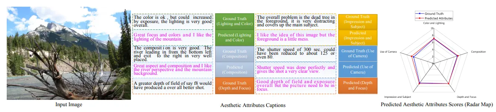
Xin Jin, Le Wu, Geng Zhao, Xiaodong Li, Xiaokun Zhang, Shiming Ge*, Dongqing Zou, Bin
Zhou,
Xinghui Zhou.
Aesthetic Attributes Assessment of Images.
In ACM International Conference on Multimedia (MM), 2019: 311-319.
[PDF]
[DOI]
[Bib]
@inproceedings{jin2019aesthetic,
title="Aesthetic Attributes Assessment of Images",
author="Xin {Jin} and Le {Wu} and Geng {Zhao} and Xiaodong {Li} and Xiaokun {Zhang} and Shiming {Ge} and Dongqing {Zou} and Bin {Zhou} and Xinghui {Zhou}",
booktitle="Proceedings of the 27th ACM International Conference on Multimedia",
pages="311--319",
notes="Sourced from Microsoft Academic - https://academic.microsoft.com/paper/2981671251",
year="2019"
}
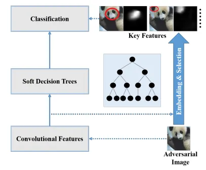
Yingying Hua, Shiming Ge*, Xindi Gao, Xin Jin, Dan Zeng.
Defending Against Adversarial Examples via Soft Decision Trees Embedding.
In ACM International Conference on Multimedia (MM), 2019: 2106-2114.
[PDF]
[Project]
[DOI]
[Bib]
@inproceedings{hua2019defending,
title="Defending Against Adversarial Examples via Soft Decision Trees Embedding",
author="Yingying {Hua} and Shiming {Ge} and Xindi {Gao} and Xin {Jin} and Dan {Zeng}",
booktitle="Proceedings of the 27th ACM International Conference on Multimedia",
pages="2106--2114",
notes="Sourced from Microsoft Academic - https://academic.microsoft.com/paper/2981727209",
year="2019"
}
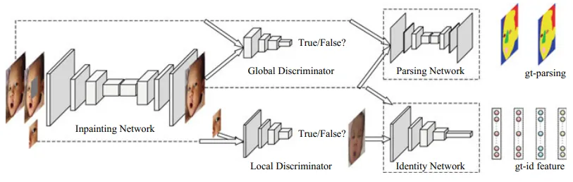
Chenyu Li, Shiming Ge*, Yingying Hua, Haolin Liu, Xin Jin.
Occluded Face Recognition by Identity-Preserving Inpainting.
Cognitive Internet of Things, 2019: 427-437.
[PDF]
[DOI]
[Bib]
@inproceedings{li2018occluded,
title={Occluded Face Recognition by Identity-Preserving Inpainting},
author={Li, Chenyu and Ge, Shiming and Hua, Yingying and Liu, Haolin and Jin, Xin},
booktitle={International Symposium on Artificial Intelligence and Robotics},
pages={427--437},
year={2018},
notes="Sourced from Microsoft Academic - https://academic.microsoft.com/paper/2931773140",
organization={Springer}
}
Jialin Gao, Tong He, Xi Zhou, Shiming Ge.
Focusing and Diffusion: Bidirectional Attentive Graph Convolutional Networks for
Skeleton-Based Action Recognition.
Computer Research Repository (CoRR), 2019: 11521.
[DOI]
[Bib]
@article{gao2019focusing,
title="Focusing and Diffusion: Bidirectional Attentive Graph Convolutional Networks for Skeleton-based Action Recognition.",
author="Jialin {Gao} and Tong {He} and Xi {Zhou} and Shiming {Ge}",
journal="arXiv preprint arXiv:1912.11521",
notes="Sourced from Microsoft Academic - https://academic.microsoft.com/paper/2997852764",
year="2019"
}
2018
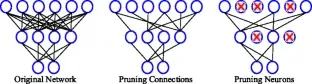
Dan Zeng*, Fan Zhao, Wei Shen, Shiming Ge.
Compressing and Accelerating Neural Network for Facial Point Localization.
Cognitive Computing, 2018, 10(2): 359-367.
[PDF]
[DOI]
[Bib]
@article{zeng2018compressing,
title="Compressing and Accelerating Neural Network for Facial Point Localization",
author="Dan {Zeng} and Fan {Zhao} and Wei {Shen} and Shiming {Ge}",
journal="Cognitive Computation",
volume="10",
number="2",
pages="359--367",
notes="Sourced from Microsoft Academic - https://academic.microsoft.com/paper/2755245065",
year="2018"
}
Shiming Ge*, Xin Jin, Qiting Ye, Zhao Luo, Qiang Li.
Image Editing by Object-Aware Optimal Boundary Searching and Mixed-Domain Composition.
Computational Visual Media, 2018, 4(1): 71-82.
[PDF]
[DOI]
[Bib]
@article{ge2018image,
title="Image Editing by Object-Aware Optimal Boundary Searching and Mixed-Domain Composition",
author="Shiming {Ge} and Xin {Jin} and Qiting {Ye} and Zhao {Luo} and Qiang {Li}",
journal="Computational Visual Media",
volume="4",
number="1",
pages="71--82",
notes="Sourced from Microsoft Academic - https://academic.microsoft.com/paper/2793886546",
year="2018"
}
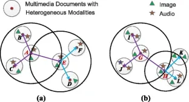
Shikui Wei*, Yao Zhao, Tao Yang, Zhili Zhou, Shiming Ge.
Enhancing Heterogeneous Similarity Estimation via Neighborhood Reversibility.
Multimedia Tools and Applications, 2018, 77(1): 1437-1452.
[DOI]
[Bib]
@article{wei2018enhancing,
title="Enhancing Heterogeneous Similarity Estimation via Neighborhood Reversibility",
author="Shikui {Wei} and Yao {Zhao} and Tao {Yang} and Zhili {Zhou} and Shiming {Ge}",
journal="Multimedia Tools and Applications",
volume="77",
number="1",
pages="1437--1452",
notes="Sourced from Microsoft Academic - https://academic.microsoft.com/paper/2573825801",
year="2018"
}
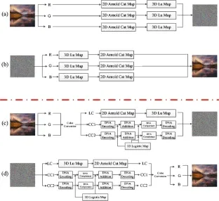
Xin Jin, Sui Yin, Ningning Liu, Xiaodong Li, Geng Zhao, Shiming Ge*.
Color Image Encryption in Non-RGB Color Spaces.
Multimedia Tools and Applications, 2018, 77(12): 15851-15873.
[DOI]
[Bib]
@article{jin2018color,
title="Color Image Encryption in Non-RGB Color Spaces",
author="Xin {Jin} and Sui {Yin} and Ningning {Liu} and Xiaodong {Li} and Geng {Zhao} and Shiming {Ge}",
journal="Multimedia Tools and Applications",
volume="77",
number="12",
pages="15851--15873",
notes="Sourced from Microsoft Academic - https://academic.microsoft.com/paper/2750591897",
year="2018"
}
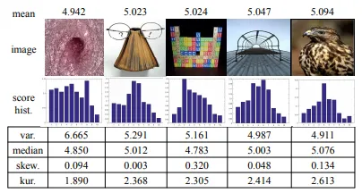
Xin Jin, Le Wu, Xiaodong Li, Siyu Chen, Siwei Peng, Jingying Chi, Shiming Ge*,
Chenggen
Song, Geng Zhao.
Predicting Aesthetic Score Distribution Through Cumulative Jensen-Shannon Divergence.
In AAAI Conference on Artificial Intelligence (AAAI), 2018: 77-84.
[PDF]
[DOI]
[Bib]
@inproceedings{jin2018predicting,
title="Predicting Aesthetic Score Distribution through Cumulative Jensen-Shannon Divergence",
author="Xin {Jin} and Le {Wu} and Xiaodong {Li} and Siyu {Chen} and Siwei {Peng} and Jingying {Chi} and Shiming {Ge} and Chenggen {Song} and Geng {Zhao}",
booktitle="AAAI-18 AAAI Conference on Artificial Intelligence",
pages="77--84",
notes="Sourced from Microsoft Academic - https://academic.microsoft.com/paper/2964084596",
year="2018"
}
Haolin Liu, Chenyu Li, Shiming Ge*, Shengwei Zhao, Xin Jin.
Generative Image Inpainting with Neural Features.
In International Conference on Internet Multimedia Computing and Service (ICIMCS), 2018,
23(5): 1-5.
[PDF]
[DOI]
[Bib]
@inproceedings{10.1145/3240876.3240902,
author = {Liu, Haolin and Li, Chenyu and Ge, Shiming and Zhao, Shengwei and Jin, Xin},
title = {Generative Image Inpainting with Neural Features},
year = {2018},
isbn = {9781450365208},
publisher = {Association for Computing Machinery},
address = {New York, NY, USA},
url = {https://doi.org/10.1145/3240876.3240902},
doi = {10.1145/3240876.3240902},
booktitle = {Proceedings of the 10th International Conference on Internet Multimedia Computing and Service},
articleno = {23},
numpages = {5},
keywords = {image inpainting, neural features, generative adversarial networks},
location = {Nanjing, China},
series = {ICIMCS '18}
}

Zhao Luo, Shiming Ge*, Yingying Hua, Haolin Liu, Xin Jin.
Extracting Features of Interest from Small Deep Networks for Efficient Visual Tracking.
Pacific Rim Conference on Multimedia (PCM), 2018, 11164: 414-425.
[DOI]
[Bib]
@inproceedings{luo2018extracting,
title="Extracting Features of Interest from Small Deep Networks for Efficient Visual Tracking",
author="Zhao {Luo} and Shiming {Ge} and Yingying {Hua} and Haolin {Liu} and Xin {Jin}",
booktitle="Pacific Rim Conference on Multimedia",
pages="414--425",
notes="Sourced from Microsoft Academic - https://academic.microsoft.com/paper/2891961991",
year="2018"
}
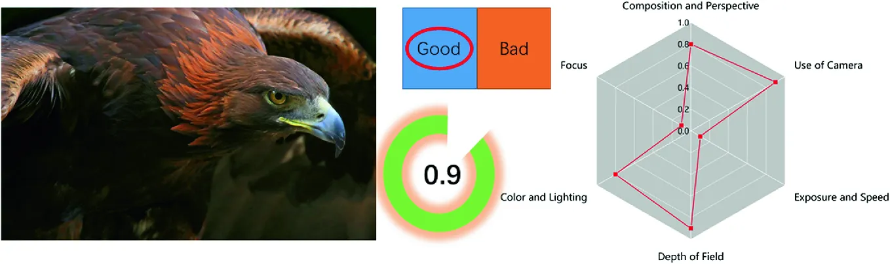
Xin Jin, Le Wu, Xinghui Zhou, Geng Zhao, Xiaokun Zhang, Xiaodong Li, Shiming Ge*.
Predicting Aesthetic Radar Map Using a Hierarchical Multi-Task Network.
Pattern Recognition and Computer Vision (PRCV), 2018, 11257: 41-50.
[DOI]
[Bib]
@inproceedings{jin2018predicting,
title="Predicting Aesthetic Radar Map Using a Hierarchical Multi-task Network",
author="Xin {Jin} and Le {Wu} and Xinghui {Zhou} and Geng {Zhao} and Xiaokun {Zhang} and Xiaodong {Li} and Shiming {Ge}",
booktitle="Chinese Conference on Pattern Recognition and Computer Vision (PRCV)",
pages="41--50",
notes="Sourced from Microsoft Academic - https://academic.microsoft.com/paper/2898960356",
year="2018"
}
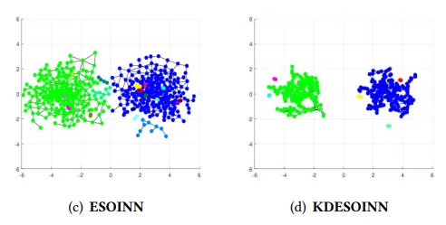
Xiaoyu Wang, Osamu Hasegawa, Shiming Ge.
Error Analysis and Topology Modifications of a Self-Organizing Incremental Neural
Network.
In ACM Symposium On Applied Computing (SAC), 2018: 487-494.
[DOI]
[Bib]
@inproceedings{inproceedings,
author = {Wang, Xiaoyu and Hasegawa, Osamu and Ge, Shiming},
year = {2018},
month = {04},
pages = {487-494},
title = {Error Analysis and Topology Modifications of a Self-Organizing Incremental Neural
Network},
isbn = {978-1-4503-5191-1},
journal = {SAC '18: Proceedings of the 33rd Annual ACM Symposium on Applied Computing},
doi = {10.1145/3167132.3167186}
}
2017
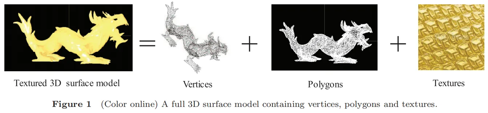
Xin Jin, Shuyun Zhu, Chaoen Xiao, Hongbo Sun, Xiaodong Li*, Geng Zhao, Shiming Ge*.
3D Textured Model Encryption via 3D Lu Chaotic Mapping.
Science China Information Sciences, 2017, 60(12): 122107.
[PDF]
[DOI]
[Bib]
@article{jin20173d,
title="3D Textured Model Encryption via 3D Lu Chaotic Mapping",
author="Xin {Jin} and Shuyun {Zhu} and Chaoen {Xiao} and Hongbo {Sun} and Xiaodong {Li} and Geng {Zhao} and Shiming {Ge}",
journal="Science in China Series F: Information Sciences",
volume="60",
number="12",
pages="122107",
notes="Sourced from Microsoft Academic - https://academic.microsoft.com/paper/2757675219",
year="2017"
}
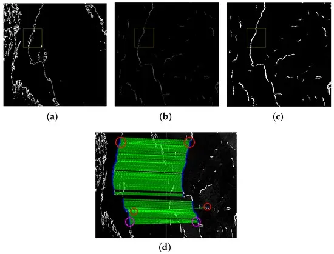
Dan Zeng, Rui Fang, Shiming Ge*, Shuying Li, Zhijiang Zhang.
Geometry-Based Global Alignment for GSMS Remote Sensing Images.
Remote Sensing, 2017, 9(6): 587.
[PDF]
[DOI]
[Bib]
@article{zeng2017geometry,
title="Geometry-Based Global Alignment for GSMS Remote Sensing Images",
author="Dan {Zeng} and Rui {Fang} and Shiming {Ge} and Shuying {Li} and Zhijiang {Zhang}",
journal="Remote Sensing",
volume="9",
number="6",
pages="587",
notes="Sourced from Microsoft Academic - https://academic.microsoft.com/paper/2621426279",
year="2017"
}
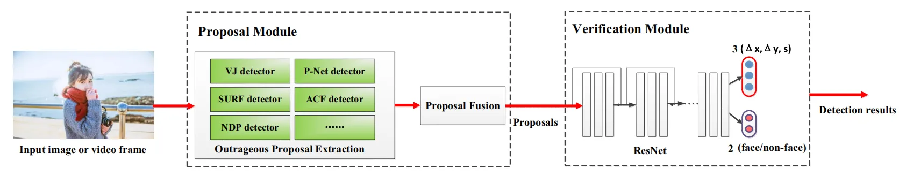
Shiming Ge, Qiting Ye, Zhao Luo, Shengwei Zhao.
Try Everything: Detecting Occluded Faces by Cascading Outrageous Proposal Generation and
Deep Convolutional Neural Network.
In IEEE Fifth International Conference on Multimedia Big Data (BigMM), 2017: 193-196.
[DOI]
[Bib]
@inproceedings{ge2017try,
title="Try Everything: Detecting Occluded Faces by Cascading Outrageous Proposal Generation and Deep Convolutional Neural Network",
author="Shiming {Ge} and Qiting {Ye} and Zhao {Luo} and Shengwei {Zhao}",
booktitle="2017 IEEE Third International Conference on Multimedia Big Data (BigMM)",
pages="193--196",
notes="Sourced from Microsoft Academic - https://academic.microsoft.com/paper/2725615208",
year="2017"
}
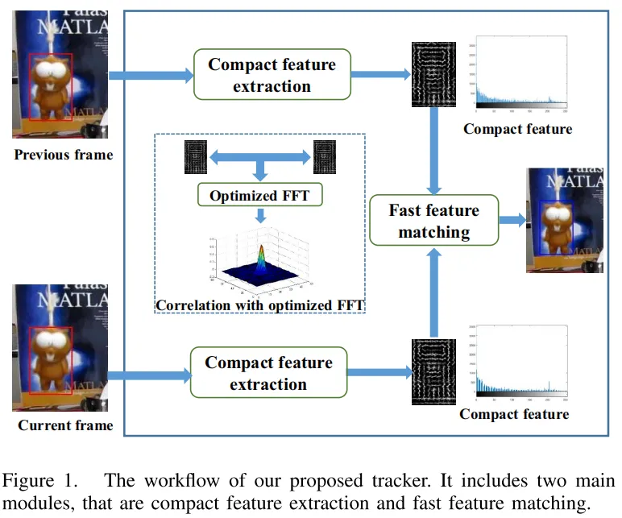
Zhao Luo, Qiting Ye, Shengwei Zhao, Shiming Ge.
An Ultra-Fast and Energy-Efficient Object Tracker.
In IEEE Fifth International Conference on Multimedia Big Data (BigMM), 2017: 248-249.
[DOI]
[Bib]
@inproceedings{2017An,
title={An Ultra-Fast and Energy-Efficient Object Tracker},
author={ Luo, Zhao and Ye, Qiting and Zhao, Shengwei and Ge, Shiming },
booktitle={2017 IEEE Third International Conference on Multimedia Big Data (BigMM)},
year={2017},
pages={248-249}
}
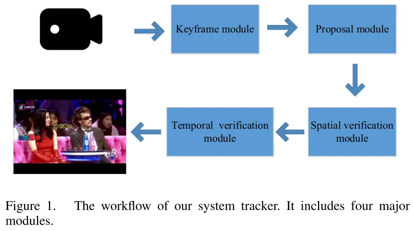
Qiting Ye, Zhao Luo, Xiaobing Xiao, Shiming Ge.
GeLoGo: Detecting TV Logos from Web-Scale Videos.
In IEEE Fifth International Conference on Multimedia Big Data (BigMM), 2017, 1: 250-251.
[DOI]
[Bib]
@inproceedings{2017GeLoGo,
title={GeLoGo: Detecting TV Logos from Web-Scale Videos},
author={ Ye, Qiting and Luo, Zhao and Xiao, Xiaobing and Ge, Shiming },
booktitle={2017 IEEE Third International Conference on Multimedia Big Data (BigMM)},
year={2017},
pages = {250-251},
}
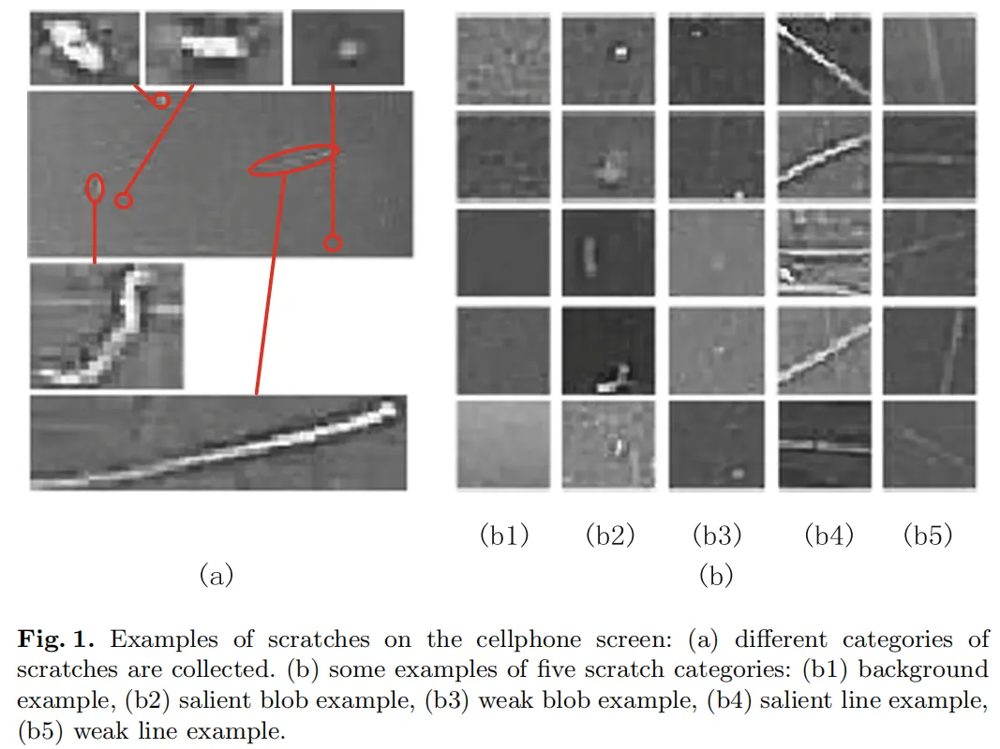
Zhao Luo, Xiaobing Xiao, Shiming Ge*, Qiting Ye, Shengwei Zhao, Xin Jin.
ScratchNet: Detecting the Scratches on Cellphone Screen.
In Chinese Conference on Computer Vision (CCCV), 2017, 773: 178-186.
[PDF]
[DOI]
[Bib]
@article{luo2017scratchnet,
title="ScratchNet: Detecting the Scratches on Cellphone Screen",
author="Zhao {Luo} and Xiaobing {Xiao} and Shiming {Ge} and Qiting {Ye} and Shengwei {Zhao} and Xin {Jin}",
journal="CCF Chinese Conference on Computer Vision",
pages="178--186",
notes="Sourced from Microsoft Academic - https://academic.microsoft.com/paper/2772263957",
year="2017"
}
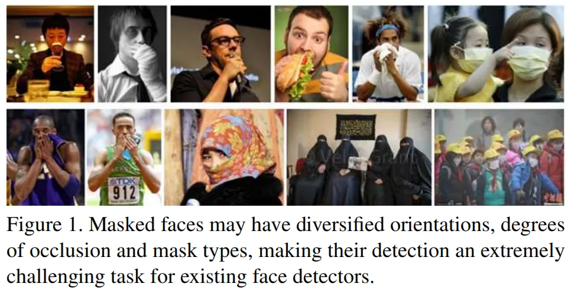
Shiming Ge, Jia Li*, Qiting Ye, Zhao Luo.
Detecting Masked Faces in the Wild with LLE-CNNs.
In IEEE Conference on Computer Vision and Pattern Recognition (CVPR), 2017: 426-434.
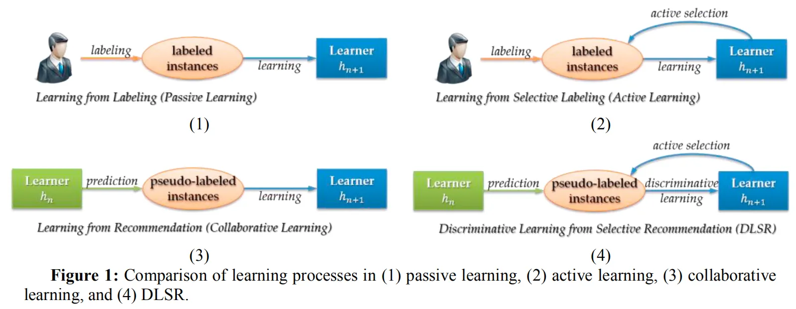
Xiaoyu Zhang, Shupeng Wang, Chao Li, Shiming Ge, Yong Wang, Binbin Li.
Discriminative Learning from Selective Recommendation and Its Application in AdaBoost.
In International Conference on Conceptual Structures (ICCS), 2017, 108: 394-403.
[DOI]
[Bib]
@article{zhang2017discriminative,
title="Discriminative Learning from Selective Recommendation and Its Application in AdaBoost",
author="Xiao-Yu {Zhang} and Shupeng {Wang} and Chao {Li} and Shiming {Ge} and Yong {Wang} and Binbin {Li}",
journal="international conference on conceptual structures",
volume="108",
pages="394--403",
notes="Sourced from Microsoft Academic - https://academic.microsoft.com/paper/2621741903",
year="2017"
}
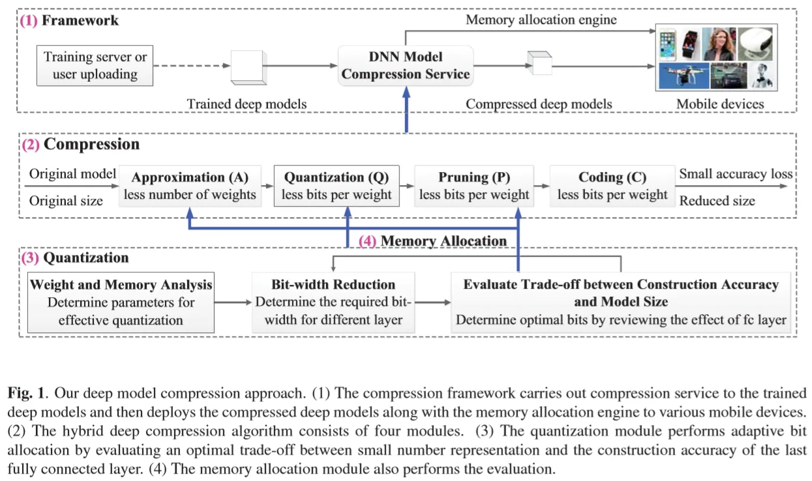
Shiming Ge*, Zhao Luo, Shengwei Zhao, Xin Jin, Xiaoyu Zhang*.
Compressing Deep Neural Networks for Efficient Visual Inference.
In IEEE International Conference on Multimedia and Expo (ICME), 2017: 667-672.
[PDF]
[DOI]
[Bib]
@inproceedings{ge2017compressing,
title="Compressing Deep Neural Networks for Efficient Visual Inference",
author="Shiming {Ge} and Zhao {Luo} and Shengwei {Zhao} and Xin {Jin} and Xiao-Yu {Zhang}",
booktitle="2017 IEEE International Conference on Multimedia and Expo (ICME)",
pages="667--672",
notes="Sourced from Microsoft Academic - https://academic.microsoft.com/paper/2750958979",
year="2017"
}
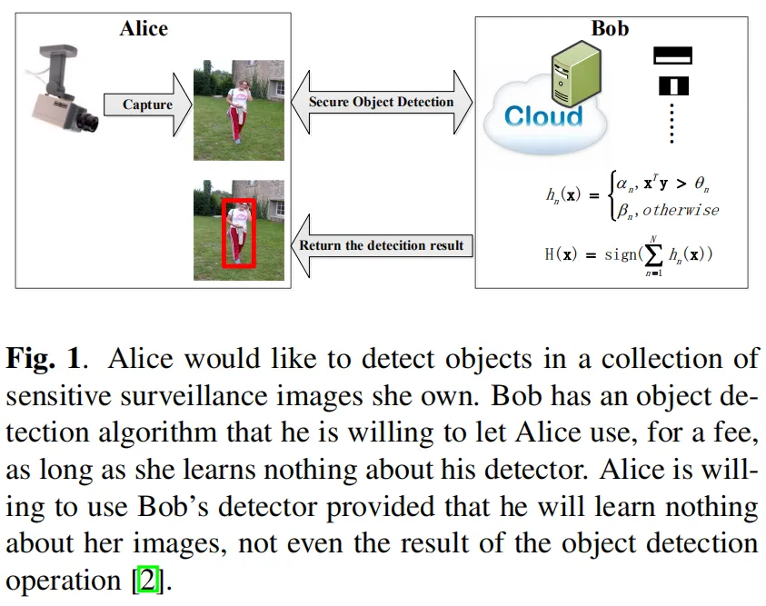
Xin Jin, Peng Yuan, Xiaodong Li, Chenggen Song, Shiming Ge*, Geng Zhao, Yingya Chen.
Efficient Privacy Preserving Viola-Jones Type Object Detection via Random Base Image
Representation.
In IEEE International Conference on Multimedia and Expo (ICME), 2017: 673-678.
[PDF]
[DOI]
[Bib]
@inproceedings{jin2017efficient,
title="Efficient Privacy Preserving Viola-Jones Type Object Detection via Random Base Image Representation",
author="Xin {Jin} and Peng {Yuan} and Xiaodong {Li} and Chenggen {Song} and Shiming {Ge} and Geng {Zhao} and Yingya {Chen}",
booktitle="2017 IEEE International Conference on Multimedia and Expo (ICME)",
pages="673--678",
notes="Sourced from Microsoft Academic - https://academic.microsoft.com/paper/2593542493",
year="2017"
}
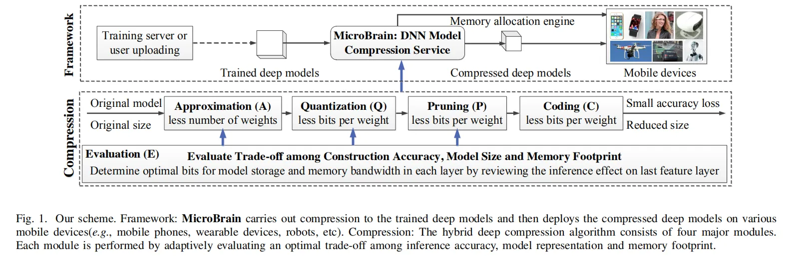
Shiming Ge, Zhao Luo, Qiting Ye, Xiaoyu Zhang.
Poster Abstract: MicroBrain: Compressing Deep Neural Networks for Energy-Efficient
Visual Inference Service.
In IEEE International Conference on Computer Communications (INFOCOM) Workshops, 2017:
1000-1001.
[DOI]
[Bib]
@inproceedings{2017Poster,
title={Poster Abstract: MicroBrain: Compressing Deep Neural Networks for Energy-Efficient
Visual Inference Service},
author={ Ge, Shiming and Luo, Zhao and Ye, Qiting and Zhang, Xiao Yu },
booktitle={2017 IEEE Conference on Computer Communications Workshops (INFOCOM WKSHPS)},
year={2017},
}
Before
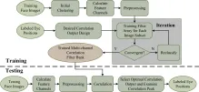
Shiming Ge, Rui Yang, Yuqing He, Kaixuan Xie, Hongsong Zhu, Shuixian Chen.
Learning Multi-Channel Correlation Filter Bank for Eye Localization.
Neurocomputing, 2016, 173: 418-424.
[DOI]
[Bib]
@article{ge2016learning,
title="Learning Multi-Channel Correlation Filter Bank for Eye Localization",
author="Shiming {Ge} and Rui {Yang} and Yuqing {He} and Kaixuan {Xie} and Hongsong {Zhu} and Shuixian {Chen}",
journal="Neurocomputing",
volume="173",
pages="418--424",
notes="Sourced from Microsoft Academic - https://academic.microsoft.com/paper/1223861734",
year="2016"
}
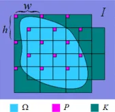
Shiming Ge, Kaixuan Xie, Shuying Li, Rui Yang.
Global Image Completion with Joint Sparse Patch Selection and Optimal Seam Synthesis.
Signal Processing, 2016, 124: 147-155.
[DOI]
[Bib]
@article{ge2016global,
title="Global Image Completion with Joint Sparse Patch Selection and Optimal Seam Synthesis",
author="Shiming {Ge} and Kaixuan {Xie} and Shuying {Li} and Rui {Yang}",
journal="Signal Processing",
volume="124",
number="124",
pages="147--155",
notes="Sourced from Microsoft Academic - https://academic.microsoft.com/paper/2196171355",
year="2016"
}
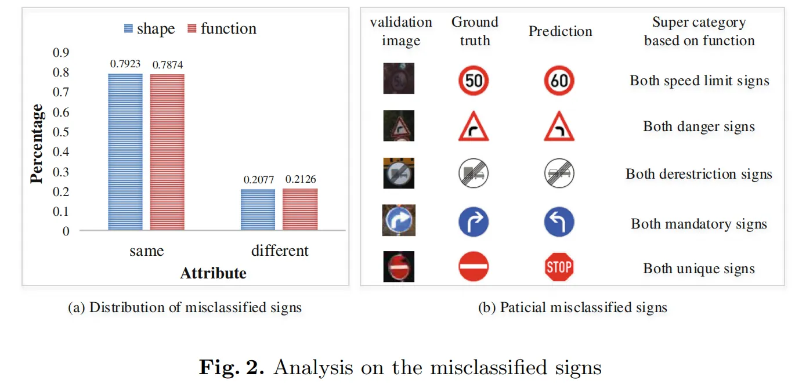
Kaixuan Xie, Shiming Ge*, Qiting Ye, Zhao Luo.
Traffic Sign Recognition Based on Attribute-Refinement Cascaded Convolutional Neural
Networks.
Pacific Rim Conference on Multimedia (PCM), 2016, 9916: 201-210.
[DOI]
[Bib]
@inproceedings{xie2016traffic,
title="Traffic Sign Recognition Based on Attribute-Refinement Cascaded Convolutional Neural Networks",
author="Kaixuan {Xie} and Shiming {Ge} and Qiting {Ye} and Zhao {Luo}",
booktitle="PCM 2016 17th Pacific-Rim Conference on Advances in Multimedia Information Processing - Volume 9916",
pages="201--210",
notes="Sourced from Microsoft Academic - https://academic.microsoft.com/paper/2549915986",
year="2016"
}
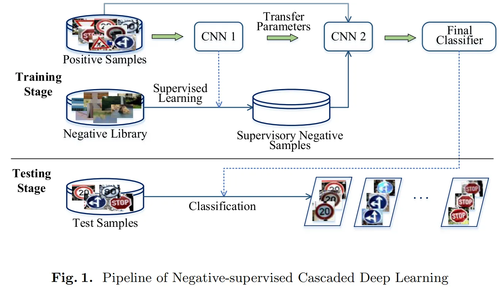
Kaixuan Xie, Shiming Ge*, Rui Yang, Xiang Lu, Limin Sun.
Negative-Supervised Cascaded Deep Learning for Traffic Sign Classification.
In Chinese Conference on Computer Vision (CCCV), 2015, 546: 249-257.
[DOI]
[Bib]
@article{xie2015negative,
title="Negative-Supervised Cascaded Deep Learning for Traffic Sign Classification",
author="Kaixuan {Xie} and Shiming {Ge} and Rui {Yang} and Xiang {Lu} and Limin {Sun}",
journal="CCF Chinese Conference on Computer Vision",
pages="249--257",
notes="Sourced from Microsoft Academic - https://academic.microsoft.com/paper/2296764314",
year="2015"
}
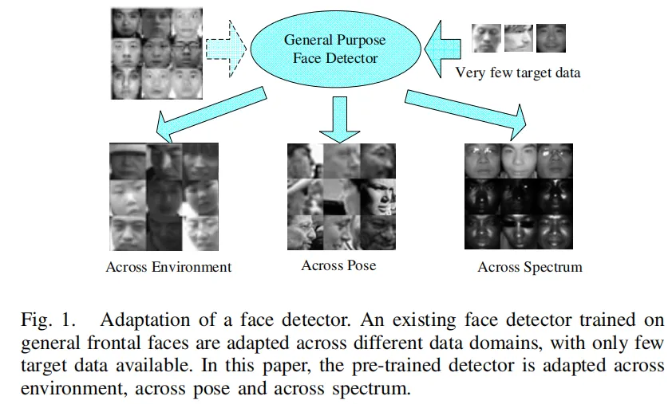
Shuixian Chen, Xiang Lu, Limin Sun, Shiming Ge.
Target Domain Adaptation for Face Detection in a Smart Camera Network with
Peer-to-Peer
Communications.
Global Communications Conference (GLOBECOM), 2015: 1-6.
[DOI]
[Bib]
@inproceedings{chen2014target,
title="Target Domain Adaptation for Face Detection in a Smart Camera Network with Peer-to-Peer Communications",
author="Shuixian {Chen} and Xiang {Lu} and Limin {Sun} and Shiming {Ge}",
booktitle="2015 IEEE Global Communications Conference (GLOBECOM)",
pages="1--6",
notes="Sourced from Microsoft Academic - https://academic.microsoft.com/paper/2291696674",
year="2014"
}
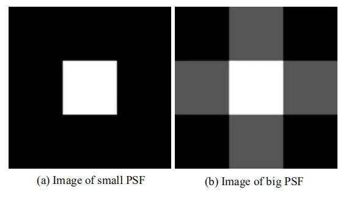
Boyang Chen, Shiming Ge, Kaixuan Xie.
Centroid Location Algorithm in Three Dimensions Based on Big Data.
In International Conference on Internet Multimedia Computing and Service (ICIMCS),
2015: 1-6.
[DOI]
[Bib]
@inproceedings{10.1145/2808492.2808532,
author = {Chen, Boyang and Ge, Shiming and Xie, Kaixuan},
title = {Centroid Location Algorithm in Three Dimensions Based on Big Data},
year = {2015},
isbn = {9781450335287},
publisher = {Association for Computing Machinery},
address = {New York, NY, USA},
url = {https://doi.org/10.1145/2808492.2808532},
doi = {10.1145/2808492.2808532},
booktitle = {Proceedings of the 7th International Conference on Internet Multimedia Computing and Service},
articleno = {40},
numpages = {6},
keywords = {centroid location, point target, three dimensions},
location = {Zhangjiajie, Hunan, China},
series = {ICIMCS '15}
}
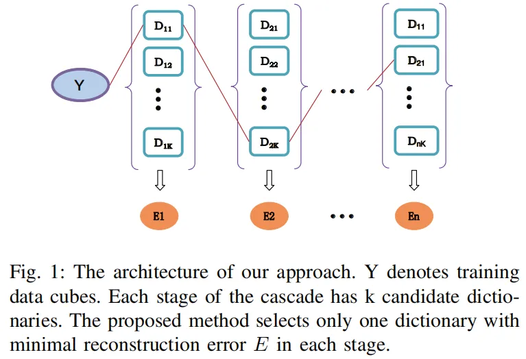
Hui Wen, Shiming Ge, Shuixian Chen, Hongtao Wang, Limin Sun.
Abnormal Event Detection via Adaptive Cascade Dictionary Learning.
In IEEE International Conference on Image Processing (ICIP), 2015: 847-851.
[DOI]
[Bib]
@inproceedings{wen2015abnormal,
title="Abnormal Event Detection via Adaptive Cascade Dictionary Learning",
author="Hui {Wen} and Shiming {Ge} and Shuixian {Chen} and Hongtao {Wang} and Limin {Sun}",
booktitle="2015 IEEE International Conference on Image Processing (ICIP)",
pages="847--851",
notes="Sourced from Microsoft Academic - https://academic.microsoft.com/paper/2295658252",
year="2015"
}
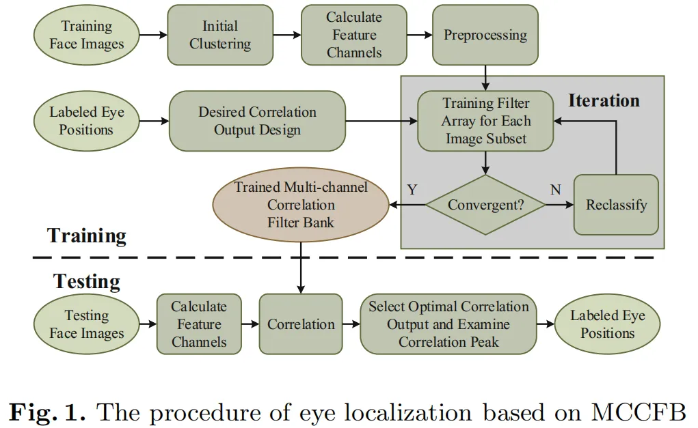
Rui Yang, Shiming Ge, Kaixuan Xie, Shuixian Chen.
Eye Localization Based on Multi-Channel Correlation Filter Bank.
In Chinese Conference on Pattern Recognition (CCPR), 2014, 483: 325-334.
[PDF]
[DOI]
[Bib]
@inproceedings{yang2014eye,
title="Eye Localization Based on Multi-Channel Correlation Filter Bank",
author="Rui {Yang} and Shiming {Ge} and Kaixuan {Xie} and Shuixian {Chen}",
booktitle="Chinese Conference on Pattern Recognition",
pages="325--334",
notes="Sourced from Microsoft Academic - https://academic.microsoft.com/paper/378509809",
year="2014"
}
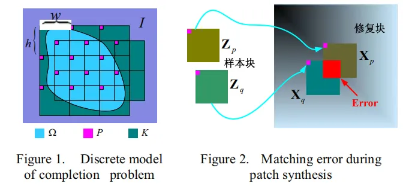
Shiming Ge, Kaixuan Xie, Rui Yang, Zhiqiang Shi.
Image Completion Using Global Patch Matching and Optimal Seam Synthesis.
In International Conference on Pattern Recognition (ICPR), 2014: 871-876.
[DOI]
[Bib]
@inproceedings{ge2014image,
title="Image Completion Using Global Patch Matching and Optimal Seam Synthesis",
author="Shiming {Ge} and Kaixuan {Xie} and Rui {Yang} and Zhiqiang {Shi}",
booktitle="ICPR '14 Proceedings of the 2014 22nd International Conference on Pattern Recognition",
pages="871--876",
notes="Sourced from Microsoft Academic - https://academic.microsoft.com/paper/2094689177",
year="2014"
}
Hui Wen, Qiang Li, Qi Han, Shiming Ge, Limin Sun.
Poster: Crowdsourcing for Video Traffic Surveillance.
Mobile Systems, Applications, and Services (MobiSys), 2014: 384.
[DOI]
[Bib]
@inproceedings{10.1145/2594368.2601460,
author = {Wen, Hui and Li, Qiang and Han, Qi and Ge, Shiming and Sun, Limin},
title = {Poster: Crowdsourcing for Video Traffic Surveillance},
year = {2014},
isbn = {9781450327930},
publisher = {Association for Computing Machinery},
address = {New York, NY, USA},
url = {https://doi.org/10.1145/2594368.2601460},
doi = {10.1145/2594368.2601460},
booktitle = {Proceedings of the 12th Annual International Conference on Mobile Systems, Applications, and Services},
pages = {384},
numpages = {1},
keywords = {event detection, crowdsourcing, video traffic surveillance},
location = {Bretton Woods, New Hampshire, USA},
series = {MobiSys '14}
}
Shiming Ge, Hao Wang, Kongqiao Wang, Lei Xu.
Interactive Sketch Template Creation from Realistic Pictures for Tracing Applications.
Internet Multimedia Computing and Service (ICIMCS), 2009: 119-122.
[DOI]
[Bib]
@article{ge-ICIMCS-2009,
author = {ge, Shiming and Wang, Hao and Wang, Kongqiao and Xu, Lei},
year = {2009},
month = {11},
pages = {},
title = {Interactive Sketch Template Creation from Realistic Pictures for Tracing Applications},
journal = {1st International Conference on Internet Multimedia Computing and Service, ICIMCS 2009},
doi = {10.1145/1734605.1734635}
}
Shiming Ge, Kongqiao Wang, Hao Wang, Feng Zhao.
A Unified Gradient Domain Method for Seamless Image Processing.
In IEEE International Conference on Image Processing (ICIP), 2009: 1361-1364.
[DOI]
[Bib]
@inproceedings{ge2009a,
title="A Unified Gradient Domain Method for Seamless Image Processing",
author="Shiming {Ge} and Kongqiao {Wang} and Hao {Wang} and Feng {Zhao}",
booktitle="2009 16th IEEE International Conference on Image Processing (ICIP)",
pages="1353--1356",
notes="Sourced from Microsoft Academic - https://academic.microsoft.com/paper/2169292113",
year="2009"
}
Feng Zhao, Hao Wang, Xiujuan Chai, Shiming Ge.
A Fast and Effective Outlier Detection Method for Matching Uncalibrated Images.
In IEEE International Conference on Image Processing (ICIP), 2009: 2097-2100.
[DOI]
[Bib]
@inproceedings{zhao2009a,
title="A Fast and Effective Outlier Detection Method for Matching Uncalibrated Images",
author="Feng {Zhao} and Hao {Wang} and Xiujuan {Chai} and Shiming {Ge}",
booktitle="2009 16th IEEE International Conference on Image Processing (ICIP)",
pages="2073--2076",
notes="Sourced from Microsoft Academic - https://academic.microsoft.com/paper/2116329490",
year="2009"
}

 京公网安备 11011602000736号
京公网安备 11011602000736号